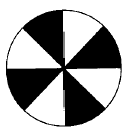
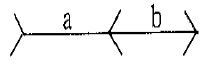
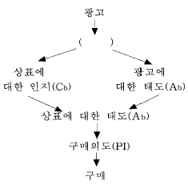
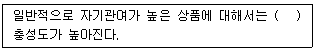

시각디자인기사 (2004-05-23 기출문제)
1과목: 시각디자인론
1. 디자인 서비스 시장의 개방에 따른 결과를 예측한 내용 중 가장 적절치 못한 것은?
- 우리나라 디자인 전문기관보다 월등한 실력으로 국내시장을 잠식해 버릴 가능성이 있다.
- 국내 디자인 전문가들에게 새로운 발전의 계기를 제공할 수 있다.
- 선진기술을 습득할 수 있는 촉매제 역할이 된다.
- 국내 디자이너에게 최악의 조건이므로 회생 가능성이 거의 없다.
(정답률: 100%)

2. 인쇄매체의 광고디자인에서 헤드라인의 특징으로 적합하지 않는 내용은?
- 독자의 주의를 끈다.
- 바디카피를 읽도록 유도한다.
- 소비자를 움직여 행동하도록 한다.
- 제품의 내용을 자세히 설명한다.
(정답률: 알수없음)
3. 문자를 떠나서는 시각디자인이 이루어지기 어렵다. 다음 중 문자 없이 의미를 전달할 수 있는 것은?
- 픽토그램
- 패키지
- 캘린더
- 로고타입
(정답률: 80%)
4. 시각디자인을 커뮤니케이션의 기능별로 분류할 때 상징적 기능을 갖는 것은?
- 패키지
- 지도
- 신문광고
- 심볼
(정답률: 알수없음)
5. 팝아트와 거리가 먼 작가는?
- 앤디워홀
- 올덴버그
- 리차드 헤밀턴
- 바자렐리
(정답률: 알수없음)
6. 상표 등록출원 기관은?
- 중소기업청
- 특허청
- 과학기술처
- 시청
(정답률: 알수없음)
7. 회사명이나 상품명을 의미적으로 전달하기 위하여 문자를 개성적으로 조형화시킨 디자인은?
- Typeface
- Collage
- Pictogram
- Logotype
(정답률: 100%)
8. 좋은 포장을 위한 다음 내용 중 점포의 기능을 고려한 조건으로 비교적 거리가 먼 것은?
- 시각효과 증진
- 커뮤니케이션의 효율성
- 상품 만족도 보장
- 상품의 장점 부각
(정답률: 82%)
9. '데 스틸'에 관한 설명으로 옳지 않은 것은 ?
- 신조형주의 운동이라고 불리우며, 추상적인 형태와 조형을 추구하였다.
- 네델란드에서 시작된 기하학적 추상미술 운동으로서 바우하우스를 중심으로 하는 모더니즘 디자인 운동에 큰 영향을 주었다.
- 개인적, 개성적인 표현성을 배제하는 주지주의 추상미술운동이었다.
- 데 스틸 운동의 양식적인 특성은 화가 '피카소'와 '달리'의 그림에서 잘 드러난다.
(정답률: 알수없음)
10. 산업디자인을 보는 관점은 판매를 위한 디자인에서 생산을 위한 디자인으로, 그리고 다시 소비를 위한 디자인으로 바뀌었다. 이러한 맥락에서 현재, 그리고 이후 디자인의 중요한 관점으로 가장 합당한 것은?
- 환경을 위한 디자인
- 개인을 위한 디자인
- 유행을 위한 디자인
- 서비스를 위한 디자인
(정답률: 30%)
11. 1981년에 창립된 이태리의 혁신적인 디자인 그룹으로 '에토레 소트사스'가 중심이 되었으며, 후기 혁신주의 또는 후기 전위운동으로 평가된 것은?
- 멤피스 디자인그룹
- 바우하우스
- 비엔나세세션
- 웨지우드
(정답률: 54%)
12. 다음 중 어떤 모양이나 그림을 컷으로 오려서 화면에 붙이거나 떼면서 일정한 모양으로 조금씩 움직여 촬영하는 기법은?
- 투광 애니메이션
- 셀 애니메이션
- 컴퓨터 애니메이션
- 컷아웃 애니메이션
(정답률: 알수없음)
13. 다음 POP의 기능을 설명한 내용 중 가장 거리가 먼 항목은?
- 매스컴 광고를 대신한다.
- 점두, 점내에서 타사 제품보다 주의를 끌도록 자극한다.
- 점원의 판매행위를 보조하며 대변하는 동시에 판매효율을 높인다.
- 신상품의 출현을 알리고 브랜드 명 및 기능을 강조할 수 있다.
(정답률: 알수없음)
14. 컴퓨터의 입력지시기구로써 절대좌표를 표시할 수 있는 가장 적절한 것은?
- 디지타이저(Digitizer)
- 마우스(Mouse)
- 키보드(Key board)
- 그래픽 보드(Graphic board)
(정답률: 67%)
15. 디자인 문제 해결을 위한 방법 중 직관적인 두뇌 활동을 활용하여 창조적인 아이디어를 얻는데 사용되는 방법은?
- 블랙 박스 방법
- 수렴적 사고방식
- 글라스 박스 방법
- 체계적 접근방식
(정답률: 알수없음)
16. 시각디자인에서 Communication 기능과 가장 거리가 먼 내용은?
- 설득적 기능
- 지시적 기능
- 상징적 기능
- 장식적 기능
(정답률: 100%)
17. 시대의 변화가 급격한 오늘날의 시장 변화를 설명한 말로 적절치 않은 것은?
- 시장이 세분화되고 서비스가 다양해진다.
- 동종의 유사한 산업간의 구분이 모호해진다.
- 제품의 디자인 수명이 짧아진다.
- 유사업체들 간의 경쟁이 사라진다.
(정답률: 알수없음)
18. 주로 인물을 소재로 하여 익살, 유머, 풍자등의 효과를 살려 그린 그림으로 맞는 것은?
- 일러스트레이션(Illustration)
- 캐리커쳐(Caricature)
- 꼴라쥬(Collage)
- 다이어그램(Diagram)
(정답률: 알수없음)
19. 저작권을 국제적으로 서로 보호할 것을 목적으로 체결된 조약은?
- 파리협약
- 베른협약
- 파리동맹
- 런던동맹
(정답률: 67%)
20. 아이디어를 전개하는데 비교적 합당하지 않는 것은?
- 디자인 원칙의 적용
- 정보의 적절한 편집
- 목표의 분명한 인식
- 시간 절약을 우선
(정답률: 알수없음)
2과목: 조형심리학
21. 사물에 대해 지속적이고 고정적인 인식을 하고 있는 현상은?
- 지각의 항상성
- 지각의 동질성
- 지각의 점진성
- 지각의 착오성
(정답률: 알수없음)
22. 자연미의 특징은?
- 생산성을 지니고 있다.
- 인격적 생명의 인상이 확실하다.
- 비교적 견고하여 변화가 없다.
- 오래 보존할 수가 없다.
(정답률: 알수없음)
23. 모든 변의 길이가 같고 또한 모든 각이 같은 형태는?
- 마름모꼴
- 정다각형
- 루트직사각형
- 황금직사각형
(정답률: 알수없음)
24. 보이지 않는 부분을 표시하는 선은?
- 실선
- 외형선
- 은선
- 중심선
(정답률: 알수없음)
25. 다음 군화(群化)의 법칙을 설명한 것으로 옳지 않은 것은?
- 서로 가까이 있는 요소들은 하나로 뭉쳐져 보인다.
- 비슷한 움직임을 지닌 것은 하나로 지각된다.
- 두 개의 영역을 나누는 경계선은 도형으로 된 윤곽선으로서 도형에 속한다.
- 윤곽선으로 닫혀진 공간은 하나의 도형을 이룬다.
(정답률: 알수없음)
26. 동일한 요소가 규칙적이거나 주기적으로 반복되면 리듬을 갖게 된다. 다음 중 이러한 반복의 효과를 주로 활용하는 가장 좋은 예시가 되는 것은 ?
- 포장지와 벽지
- 크리스마스 카드와 신년카드
- 포스터와 엽서
- 심볼과 로고타입
(정답률: 87%)
27. 그림과 같이 서로 근접하는 두 가지의 영역이 때에 따라서 어느 쪽 하나는 도형으로 되고 다른 것은 바탕으로 되어 보이는 경우가 있다. 이와 같은 도형은?

- 착시도형
- 인상성과 주목성의 도형
- 도형과 바탕의 반전도형
- 루빈의 분할도형
(정답률: 알수없음)
28. 프랑스를 중심으로 일어난 아르누보 운동은 자연계의 어떠한 형태를 장식미술로 사용한 것인가
- 기하학적 형태
- 우연적 형태
- 유기적 형태
- 기계적 형태
(정답률: 알수없음)
29. 형태나 색채 등이 반복되어 표현되었을 때 느낄 수 있는 디자인의 원리는?
- 강조
- 조화
- 대비
- 리듬
(정답률: 88%)
30. 비슷한 성질을 가진 요소는 비록 떨어져 있다 하더라도 덩어리져 보이는 경향이 있다. 색맹 검사표에 이용된 법칙은?
- 근접의 법칙
- 유사의 법칙
- 폐쇄의 법칙
- 연속의 법칙
(정답률: 알수없음)
31. 착시현상을 설명한 내용 중 가장 올바른 것은?
- 지각된 부분들 사이에 상호작용의 결과로 생기는 현상
- 비슷한 움직임을 지닌 것끼리 하나로 지각되는 현상
- 외부로부터의 자극이 없이 관찰자의 자발적 흥분에 의해서 일어나는 것
- 3차원의 공간에서 나타나는 현상
(정답률: 알수없음)
32. 디자인의 개념적인 요소가 아닌 것은?
- 선
- 면
- 점
- 비례
(정답률: 90%)
33. 진출색에 대한 설명이다. 틀린 것은?
- 난색이 한색보다 진출성이 크다.
- 고채도의 색이 저채도 색보다 진출성이 크다.
- 암색이 명색보다 진출성이 크다.
- 유채색이 무채색 보다 진출성이 크다.
(정답률: 알수없음)
34. 다음 중 시각적 질감이 아닌 것은?
- 장식적 질감
- 촉각적 질감
- 기계적 질감
- 자연적 질감
(정답률: 알수없음)
35. 물체의 형을 평면도, 입면도, 측면도와 같이 서로 다른 수직 방향에서 보이는 대로 기록하는 투상도법은?
- 정투상도법
- 투시도법
- 사투상도법
- 등각투상도법
(정답률: 34%)
36. 건축물이나 인쇄물 등에서 중력에 대해 균형적이며, 정서적으로 안정감을 주는 방향은?
- 와선방향
- 수직방향
- 사선방향
- 수평방향
(정답률: 알수없음)
37. 색과 형태에 대한 설명 중 적당하지 않은 것은?
- 색은 정감적, 정서적, 여성적인데 비해 형태는 지적, 분석적이며 정보적이다.
- 형은 색보다 좀 더 효율적인 의사전달의 수단인데, 분명하게 구별되는 패턴을 지니고 정보성을 제공해 주기 때문이다.
- 색의 느낌은 상황에 따라 달라진다.
- 보색의 병치는 연약한 느낌을 준다.
(정답률: 알수없음)
38. 다음은 투시도 제작시 사용되는 부호와 용어들이다. 해당되지 않는 것은?
- GL-Ground Line(화면과 지면이 만나는 선)
- EP-Equal Point(같은 높이의 점)
- CV-Center of Vision(시점의 화면상의 위치)
- PP-Picture Plan(지표면에서 수직으로 세운 면)
(정답률: 알수없음)
39. 디자인 제도시 치수를 기입할 때 치수 보조 기호 중 지름을 나타내는 것은?
- Ø
- R
- T
- C
(정답률: 알수없음)
40. 다음 그림에서 a와 b는 같은 길이인데 a가 길게 보이는 것은?

- 헤링의 착시
- 본트의 착시
- 플레이저 착시
- 뮬러 라이어의 착시
(정답률: 알수없음)
3과목: 광고학
41. AIDMA 5원칙이 맞게 나열된 것은?
- Attention - Inspiration - Dimension - Mood - Action
- Attention - Interest - Desire - Memory - Action
- Attention - Innovation - Demand - Moral - Action
- Attention - Image - Decision - Manner - Action
(정답률: 85%)
42. 장기적으로 볼 때, 브랜드 이미지 형성에 가장 결정적인 요소는?
- 디자인과 디스플레이
- 광고와 세일즈 프로모션
- 광고와 PR
- 품질과 서비스
(정답률: 70%)
43. POP 광고에서 POP의 의미는?
- Point of Purchase
- Point of Production
- Push or Pull
- Pop - Up
(정답률: 알수없음)
44. 다음 그림에서 ( )안에 알맞은 것은?

- 판매
- 중개
- 선전
- 지각
(정답률: 알수없음)
45. 인터넷 마케팅의 정의가 아닌 것은?
- 가상공간에서 상호작용이 가능한 쌍방 커뮤니케이션
- 음성, 화면, 동화상 등 다양한 정보를 쌍방적으로 표현할 수 있다
- 개인이나 조직이 인터넷을 이용하여 행하는 쌍방향 커뮤니케이션
- 인터넷에 필요한 소프트웨어를 대량으로 판매하는 마케팅 형식
(정답률: 알수없음)
46. 설득커뮤니케이션 이론의 기초가 되는 인지심리학의 기본 가설은 무엇인가?
- 인간의 심리와 태도는 쉽게 변하지 않는다
- 개인의 행동은 사회적 영향을 받는다
- 고정된 관념은 학습으로도 바꾸기 힘들다
- 인간은 배우고 익히는 과정속에 태도가 변할 수 있다
(정답률: 알수없음)
47. 광고대행사에서 광고의 모든 시각적인 표현을 책임지는 사람은?
- Graphic Designer
- Illustrator
- Art Director
- Production Artist
(정답률: 알수없음)
48. 다음 ( )속에 들어가야 할 용어는?

- 인지도
- 브랜드
- 지체자
- 사용자
(정답률: 알수없음)
49. 커뮤니케이션 요소 중에서 송신자와 수신자를 연결해 주는 매개체로서 광고의 경우 광고 메시지를 소비자에게 전달해 주는 수단은?
- 송신자
- 기호화
- 노이즈
- 채널
(정답률: 알수없음)
50. 마케팅 조사에서 제일 먼저 선행되어야 할 것은?
- 조사설계
- 문제의 정립
- 자료분석
- 실사(Field Work)
(정답률: 46%)
51. 광고주가 처해있는 상황 및 요구사항을 파악하여 이를 대행사에 전달하는 역할을 수행하는 사람은?
- Graphic Designer
- Copy Writer
- Account Executive
- Art Director
(정답률: 62%)
52. 자사 제품이 동종 제품의 시장에서 차지하는 판매 비율을 흔히 시장 ( )이라고 한다. 이것에 따라서 1등일 경우와 2등일 경우 3등일 경우에 따라서 마케팅전략이나 광고전략이 바뀐다. ( )에 들어갈 맞는 것은?
- 배분율
- 점유율
- 지배율
- 잠재율
(정답률: 90%)
53. 새논과 위버(Shannon & Weaver)의 커뮤니케이션 모형에 의하면, 커뮤니케이션은 정보원→ 메시지→ 송신기→ 수신기→ ( )로 구성된다. ( )안에 들어갈 알맞은 말은?
- 목적지
- 효과
- 신호
- 피드백
(정답률: 알수없음)
54. 무성영화시대의 찰리 채플린의 움직임처럼, 경망스럽도록 빨리 움직이는 인물의 모습을 보여주려면 어느 촬영 방법을 써야 하는가?
- 저속촬영
- 미속촬영
- 초고속촬영
- 역방향 액션
(정답률: 알수없음)
55. 소비자의 라이프스타일(Life style)을 측정하는 방법 중 AIO의 요소가 아닌 것은?
- 활동
- 관심
- 의견
- 방식
(정답률: 40%)
56. 다음 광고매체 중 4대 광고매체에 속하지 않는 것은?
- 신문
- TV
- 잡지
- DM
(정답률: 알수없음)
57. 던(W.S.Dunn)이 광고 카피와 커뮤니케이션에서 주장한 헤드라인의 기능이 아닌 것은?
- 소비자를 본문(바디카피)으로 끌어들일 것
- 일반 수용자 중에서 목표 수용자를 골라 낼 것
- 헤드라인은 일러스트레이션과 조화를 이루어 소비자의 눈길을 끌 것
- 언론의 보도처럼 뉴스고지 형식으로 표현할 것
(정답률: 알수없음)
58. 레이아웃의 기본 요소가 아닌 것은?
- 광고 목적보다는 조형성을 강조한 배열
- 눈이 이동을 유도할 수 있는 치밀한 설계
- 가독성을 원활하게 하는 배열
- 아름다운 시각적 균형미
(정답률: 84%)
59. 광고 카피 전략에서 카피의 의미는?
- 광고언어(헤드라인과 보디카피)
- 광고디자인, 색상 또는 배경음악
- 광고모델, 사진, 심볼
- 광고언어를 포함한 모든 시청각적 요소
(정답률: 19%)
60. 다음 중 전광판 광고의 내용과 다른 하나는?
- 공중파 방송광고의 일종이다.
- 음성이나 음향이 지원되지 않는다.
- 여러 광고주들의 컨소시엄 형태로 설치된다.
- 허가관청은 지방자치단체이다.
(정답률: 알수없음)
4과목: 색채학
61. 색의 혼합에서 그 결과가 혼합전의 색보다 명도가 높아지는 것은?
- 색광혼합
- 색료혼합
- 병치혼합
- 중간혼합
(정답률: 82%)
62. 조명에 의하여 물체의 색을 결정하는 광원의 성질은?
- 조명성
- 기능성
- 연색성
- 조색성
(정답률: 알수없음)
63. 다음 색 중 백색배경에서 가장 명시도가 낮은 색은?
- 황색
- 보라색
- 파랑색
- 청보라색
(정답률: 알수없음)
64. 저드(Judd, D.B.)가 주장하는 색채조화의 네 가지 원칙이 아닌 것은?
- 질서성의 원리
- 모호성의 원리
- 동류성의 원리
- 친근성의 원리
(정답률: 20%)
65. 빨강 사과가 빨갛게 느끼는 이유로 다음 설명 중 옳은 것은?
- 사과 표면에 비친 빛 중 빨강 파장은 흡수, 나머지는 반사하기 때문
- 사과 표면에 비친 빛 중 빨강 파장은 투과, 나머지는 흡수하기 때문
- 사과 표면에 비친 빛 중 빨강 파장은 반사, 나머지는 흡수하기 때문
- 사과 표면에 비친 빛 중 빨강 파장은 굴절, 나머지는 반사하기 때문
(정답률: 80%)
66. Moon-Spencer의 색채조화론에 대한 설명 중 틀린 것은?
- 조화는 동등조화, 유사조화, 대비조화로 구분된다.
- 부조화는 제1부조화, 제2부조화, 눈부심(glare)이다.
- 색채조화는 색상의 범위로만 국한되어 있다.
- 색상에서 유사조화 범위는 7-12(100등분 색상)이다.
(정답률: 알수없음)
67. 우리나라 산업규격의 안전 색광 사용 통칙에 있어서 위험과 긴급을 표시하는 색광은?
- 노랑
- 빨강
- 녹색
- 자주
(정답률: 알수없음)
68. 색의 대비현상에 관한 기술 중 가장 타당성이 높은 것은?
- 면적 대비란 면적이 커지면 명도 및 채도가 더 낮아보이는 현상이다.
- 계시 대비란 먼저 본 색의 영향으로 나중에 보는 색이 다르게 보이는 현상이다.
- 한난 대비란 한색은 따뜻하게 보이고, 난색은 차게 보이는 현상이다.
- 연변 대비란 두 색이 붙어있는 경계부분에서 색의 대비가 더욱 약하게 보이는 현상이다.
(정답률: 알수없음)
69. 먼셀 색입체에 관한 기술 중 옳은 것은?
- 채도는 색입체의 중심에서 원둘레 방향으로 가면서 점점 높아진다.
- 색입체에서 채도는 위로 올라갈수록 높아진다.
- 색입체 중심축의 맨 위에는 검정색이 위치한다.
- 색입체를 임의의 위치에서 자른 수평단면은 동일채도 면이다.
(정답률: 37%)
70. 채도에 관한 설명 중 옳은 것은?
- 채도는 흰색을 섞으면 높아지고 검정색을 섞으면 낮아진다.
- 채도는 색의 선명도를 나타낸 것으로 무채색을 섞으면 낮아진다.
- 채도는 색의 밝은 정도를 말하는 것이며, 유채색끼리 섞으면 높아진다.
- 채도는 그림물감을 칠했을 때 나타나는 효과이며, 흰색을 섞으면 높아진다.
(정답률: 알수없음)
71. 비누 거품이나 전복 껍질 등에서 무지개 같은 색이 나타나는 것을 볼 수 있는데 이것은 빛의 어떠한 현상에 의해 나타나는 색인가?
- 왜곡현상
- 투과현상
- 간섭현상
- 직진현상
(정답률: 59%)
72. 크기가 같은 라디오에 다음과 같이 채색되었을 때 가장 크게 느껴지는 것은? (단, 명도는 같다.)
- 밝은 회색 라디오
- 밝은 녹색 라디오
- 밝은 보라색 라디오
- 밝은 노랑색 라디오
(정답률: 알수없음)
73. 다음 중 장시간 머무는 대합실 등에 가장 적합한 색은?
- 진출색
- 한색계
- 난색계
- 고채도의 색
(정답률: 알수없음)
74. 색의 온도감에 관한 내용 중 잘못된 것은?
- 유채색의 경우 중성색은 온도감이 느껴지지 않는다.
- 장파장보다 단파장 쪽의 색이 차게 느껴진다.
- 일반적으로 명도보다 색상에 의한 효과가 크다.
- 무채색의 경우 명도가 높으면 따뜻하게 느껴진다.
(정답률: 73%)
75. 남색의 먼셀기호와 가장 가까운 것은?
- 5PB 3/12
- 5B 4/8
- 10P 4/10
- 10RP 5/10
(정답률: 알수없음)
76. 색조(tone)의 개념에 대한 올바른 설명은?
- 채도를 나타내는 개념
- 색상과 명도를 포함하는 복합개념
- 명도와 채도를 포함하는 복합개념
- 명도를 나타내는 개념
(정답률: 알수없음)
77. 색채에 있어서 수반 감정은 색채가 인간에게 미치는 기본적인 효과를 말한다. 색이 수반하는 감정에 관한 다음 설명 중 가장 거리가 먼 것은?
- 난색계의 채도가 높은 색은 흥분을 유발시킨다.
- 장파장 쪽의 색이 따뜻하게 느껴진다.
- 저명도의 색은 무겁게 느껴진다.
- 개인별로 느낌의 차이가 대단히 많다.
(정답률: 알수없음)
78. 색의 삼속성에 관한 기술 중 잘못된 것은?
- 색상환에서 정반대쪽에 위치한 색은 보색이다.
- 명도는 고명도, 중명도, 저명도로 나눈다.
- 채도가 가장 높은 색을 백색이라고 한다.
- 무채색의 채도는 0이다.
(정답률: 67%)
79. 올림픽 마크의 5대양주 색은 어떤 성질을 이용한 것인가?
- 시대성
- 상징성
- 기호성
- 기억성
(정답률: 75%)
80. 관용색명에 대한 다음 설명 중 잘못된 것은?
- 습관상으로 사용하는 색으로 계통색명이라고도 한다.
- 하양, 검정, 빨강 등이 있다.
- 황(黃), 청(靑), 적(赤) 등이 있다.
- 금색, 은색, 호박색 등이 있다.
(정답률: 알수없음)
5과목: 사진 및 인쇄제판론
81. 가이드 넘버 24인 스트로보를 3m인 물체를 촬영할 때의 조리개 값은?
- F/4
- F/5.6
- F/8
- F/11
(정답률: 80%)
82. 상품 촬영시 유리에 반사되는 빛을 제거하기 위하여 사용하는 필터는?
- PL 필터
- ND 필터
- Soft Focus 필터
- FL 필터
(정답률: 알수없음)
83. 섬유를 얇은 층으로 하여 여과하는 공정은?
- 사이징
- 윤내기
- 초지
- 비팅
(정답률: 알수없음)
84. 대형 카메라의 렌즈면과 필름면을 움직여서 피사체의 왜곡을 바로잡고 초점면을 조절할 수 있는 기능은?
- 팬닝
- 파노라믹
- 매크로
- 무브먼트
(정답률: 알수없음)
85. PVA제판에서 화선 부분에 인쇄잉크가 잘 부착되고 인쇄에서 내쇄력을 높이기 위하여 도포하는 약품은?
- 아라비아고무
- 래커
- 수정액
- 감광액
(정답률: 알수없음)
86. 섬유제품의 촬영에 대한 설명 중 효과적인 방법이 아닌 것은?
- 세밀한 굴곡이나 질감을 표현하기 위해서는 직접광원을 사용하면 효과적이다.
- 섬유제품은 빛을 흡수하기 때문에 지시된 노출보다 1/3stop∼1stop정도 열어준다.
- 확산광을 액센트로 이용하면 털실의 부드러운 질감이 가장 잘 나타난다.
- 순모 스웨터는 확산광을 사용하면 따뜻하고 부드러운 느낌이 나타난다.
(정답률: 알수없음)
87. 화상의 반전작용을 이용하여 한 장의 화면에 음화와 양화가 동시에 나타나는 것은?
- 포토몽타쥬
- 솔라리제이션
- 포토그램
- 릴리프포토
(정답률: 알수없음)
88. 할레이션 방지층의 주된 역할은?
- 필름의 신축방지
- 잠상형성방지
- 빛의 반사방지
- 현상시 화학반응방지
(정답률: 알수없음)
89. 인쇄 기계의 3형식이 아닌 것은?
- 평압식
- 원압식
- 윤전식
- 블랭킷식
(정답률: 73%)
90. 강한 광선 조건에서 매우 빠른 감도의 필름을 사용할 때 또는 느린셔터로 촬영하기를 원할 때 사용하는 필터는?
- PL 필터
- ND 필터
- UV 필터
- RED 필터
(정답률: 60%)
91. 다음 조명 중 입체감이 강조되고 콘트라스트가 힘있는 표현을 할 수 있는 조명은?
- 순광
- 측광
- 반역광
- 역삼각 조명
(정답률: 알수없음)
92. 인쇄판의 화선부와 비화선부가 같은 평면으로 되어 있으며 물과 기름의 반발 원리를 이용한 인쇄 방법은?
- 볼록판 인쇄
- 오프셋 인쇄
- 그라비어 인쇄
- 스크린 인쇄
(정답률: 알수없음)
93. 피사계 심도에 대한 설명 중 옳지 않은 것은?
- 초점이 맞는 범위가 넓을수록 심도가 깊다.
- 피사체와의 촬영거리가 멀수록 심도는 얕다.
- 렌즈의 초점거리가 길수록 심도는 얕다.
- 조리개를 개방할수록 심도는 얕다.
(정답률: 알수없음)
94. 사진상에서 밝은 부분에 빛을 더 주어 디테일을 살리는 작업을 무엇이라 하는가?
- 닷징
- 버닝
- 트리밍
- 크로핑
(정답률: 알수없음)
95. 노출과다나 현상과다 된 필름을 화상의 농도나 콘트라스트를 낮추어 보정할 수 있는 처리법은?
- 감력
- 보력
- 조색
- 감도
(정답률: 알수없음)
96. 렌즈의 중심 부분 보다 주변 부분을 통과하는 빛이 강하게 굴절되어 생기는 수차는?
- 구면 수차
- 코마 수차
- 비점 수차
- 왜곡 수차
(정답률: 17%)
97. 흑백 현상약품의 현상주약으로 사용되지 않는 것은?
- 메톨
- 페니돈
- 빙초산
- 하이드로퀴논
(정답률: 알수없음)
98. 각 색판의 식별과 색수정량의 척도로 사용되는 것은?
- 그레이스케일
- 스타타깃
- 컬러패치
- 농도계
(정답률: 알수없음)
99. 인쇄 잉크의 구성 성분이 아닌 것은?
- 색료
- 비이클
- 보조제
- 정착제
(정답률: 알수없음)
100. 국판(A5) 책자의 크기는?
- 1⑤×148mm
- 210×297mm
- 148×210mm
- 74×1⑤mm
(정답률: 알수없음)